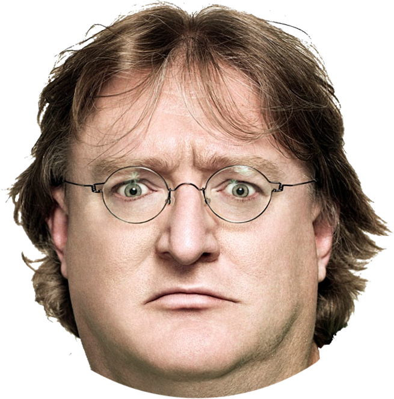

Бил Гейтс
Бил Гейтс си е играл с Наков в детската градина.
Той толкова се е впечатлил от неговия интелект, че избягва, не завършва обучението си и
създава най-популярната операционна система,
само за да докаже че и той става за нещо.
Стив Джобс

Стив Джобс е бил учител в детската градина на Наков.
Когато Наков надминава учителя си, Джобс напуска за да създаде Епъл, но в крайна сметка не
остава програмист, а просто търговец и CEO.
Марк Зъкърбърг
Марк Зъкърбърг е учил в СофтУни. "Един от НЕ - топ судентите ми!" - както го определя Наков.
Обиден Марк се депресира и напуска. В търсене на нови приятели, с които да сподели мъката си
той създава фейсбук.
Гейб Нюел

Не може да се твърди че Гейб е учил в СофтУни.
Той прекарва изцяло времето си в кафето на университета играейки непрекъснато на конзола.
Когато Наков отива при него и му казва, че това е несериозно, Гейб си тръгва.
В крайна сметка той основава Valve, междувременно ставайки милиардер, за да може пак да си
играе по цял ден, но и да му плащат за това!
Сергей Брин и Лари Пейдж

Сергей и Лари са конкуренти на Наков, още от детската градина. И те също искат да създадат
обучение по програмиране. Неспособни да се сравняват с Наков и неговата система, те основават
обиковена търсачка в интернет.